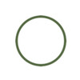
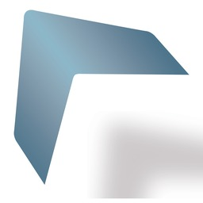
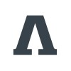
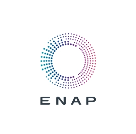
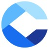
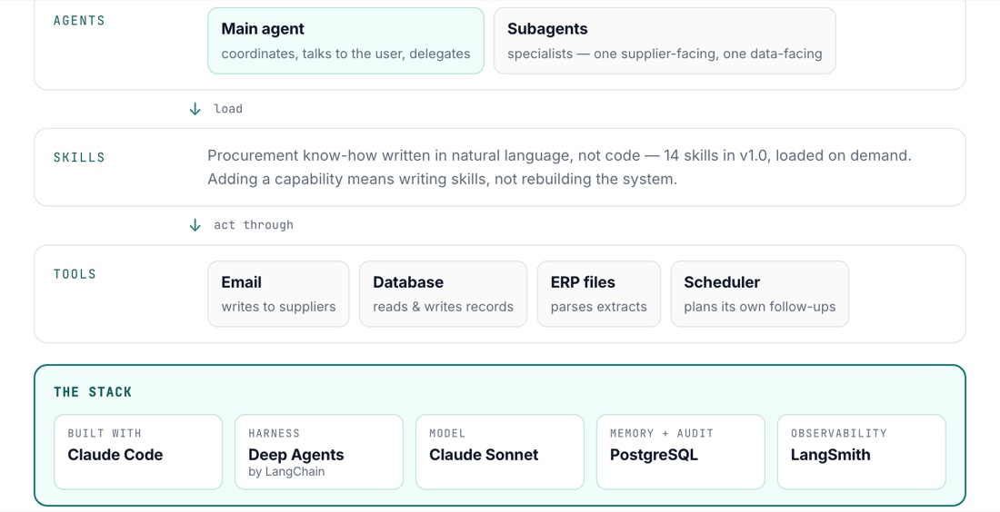
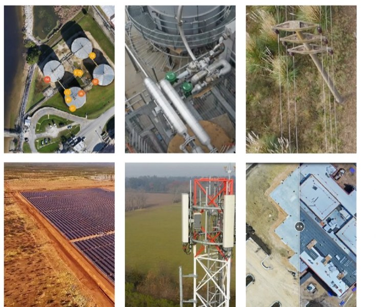
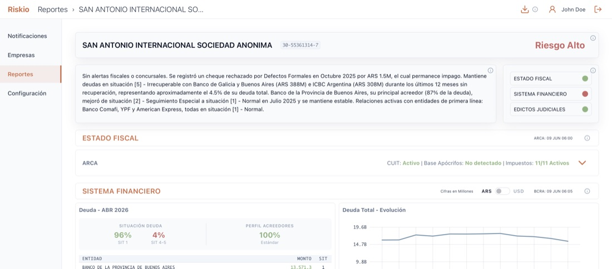
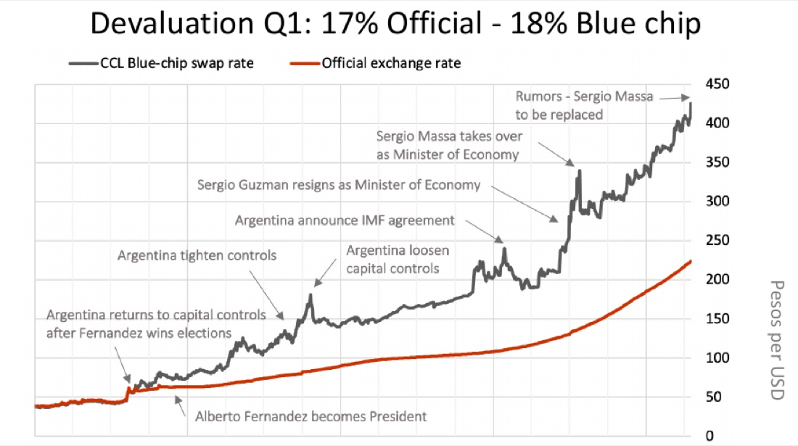

Mariano Funes
Compras y Contrataciones, Cadena de Suministro - Oil & Gas, CPG. Turnarounds. Drone Tech. Consultoría. Integración LLM - Agentic AI.






Transformaciones organizacionales
Organizaciones de cadena de suministro y compras reconstruidas en Clorox, ENAP y Archer DLS: diagnosticar, rediseñar, ejecutar.
Ver →
Procurement OS
Un agente de compras autónomo — un agente principal y dos subagentes replican un equipo de compras. V1.0: expediting y RFQ táctico.
Ver →Spend Compliance Agent
Un agente que lee contratos y verifica cada orden de compra: vínculo con contrato, precio y alcance. Prueba: USD 252,4 M de gasto, 8.704 órdenes.
Ver →
Empresa de drones
Inspección e inteligencia con drones para oil & gas, energía, utilities y agro. Cofundada; salida en 2023.
Ver →
Riskio
Monitoreo de riesgo comercial de empresas argentinas — AFIP, BCRA y Boletín Oficial, un agentic pipeline y un perfil de riesgo por LLM para cada empresa.
Ver →
Capital atrapado bajo cepo cambiario
Consultoría financiera para la subsidiaria argentina de una empresa global de servicios petroleros — una brecha cambiaria de más del 100%, caja atrapada y una hoja de ruta de opciones seguida hasta su ejecución.
Ver →Sending files is old
Con Claude Code, Markdown es el formato de salida por defecto — cómodo para el agente, tedioso para el lector humano. Por qué pasé a HTML, y cómo las herramientas de programación crearon sin proponérselo una forma más rica de compartir conocimiento.
All companies need a DOGE
El método de DOGE — control del gasto, optimización organizacional, desregulación — y por qué los presupuestos anuales con metas de ahorro planas ya no sirven en un mercado bajo disrupción constante.
Procurement: priorities, risk and basic strategies
Usar la matriz de Kraljic para clasificar el gasto por riesgo de suministro e impacto, y elegir la estrategia correcta por categoría — asegurar los cuellos de botella, presionar el gasto de palanca, y el resto.
Supplier value proposition
Qué tan difícil — y caro — es para los proveedores atender a tu organización, y por qué leer eso bien es una palanca en la mesa de negociación.
Procurement operations: solving the Red Queen effect
La burocracia y las tareas de escribanía consumen el tiempo del equipo solo para mantenerlo en el mismo lugar. Un plan de tres pasos para liberar recursos hacia el category management.
Seven deadly sins for procurement organizations
Siete errores que una organización de compras debe evitar en mercados de proveedores VUCA — del departamento huérfano a la ceguera al riesgo.
Mariano es ejecutivo y emprendedor. Le interesan la tecnología, las tesis de inversión, los negocios, la economía y la AI-LLM. MBA, IAE. Vive en Buenos Aires con su esposa, su hijo y su perro.